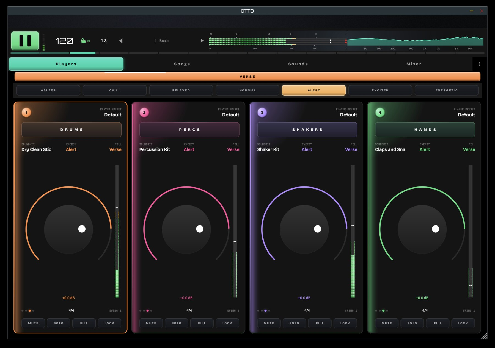
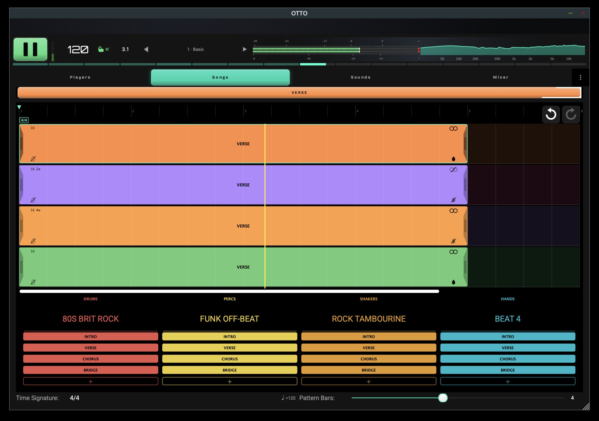
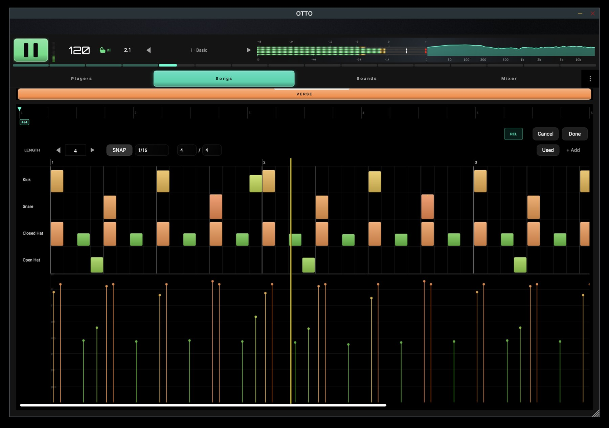
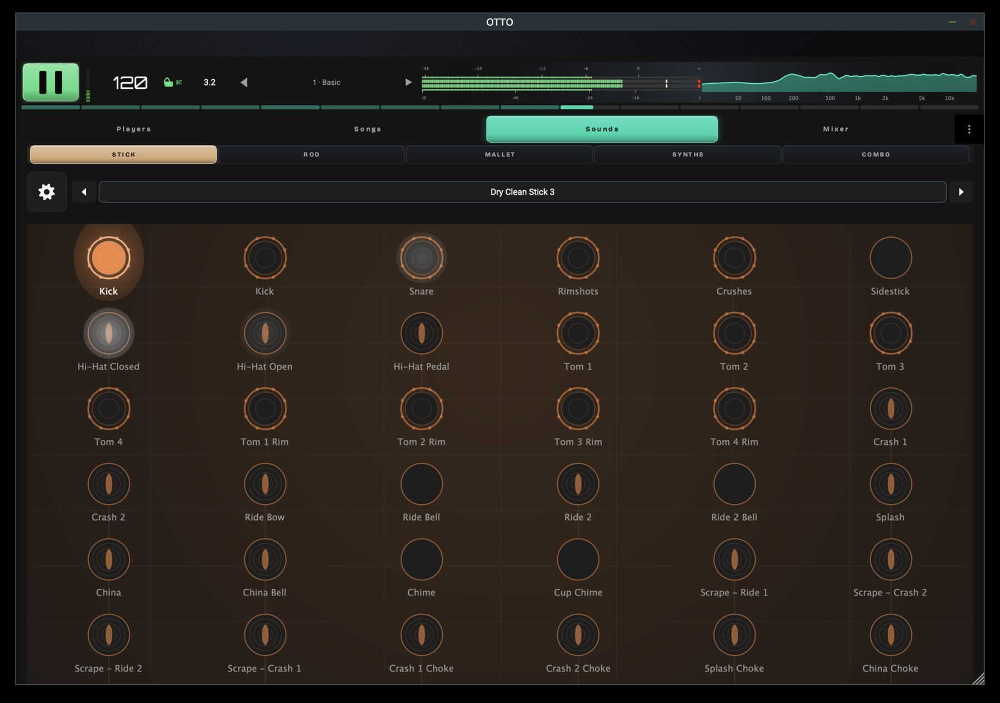
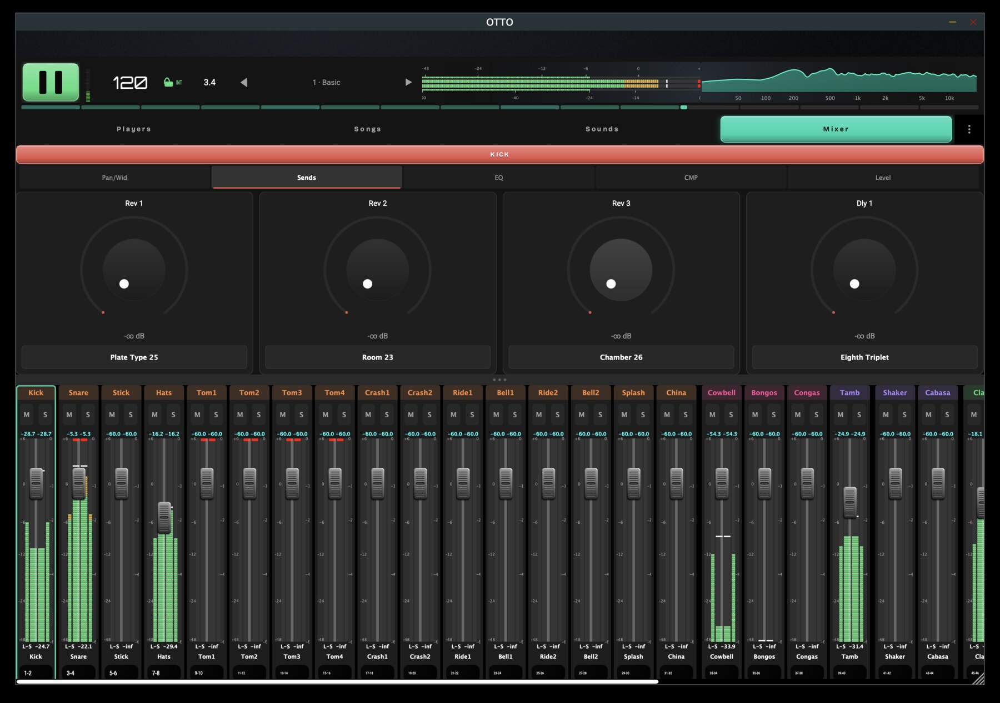
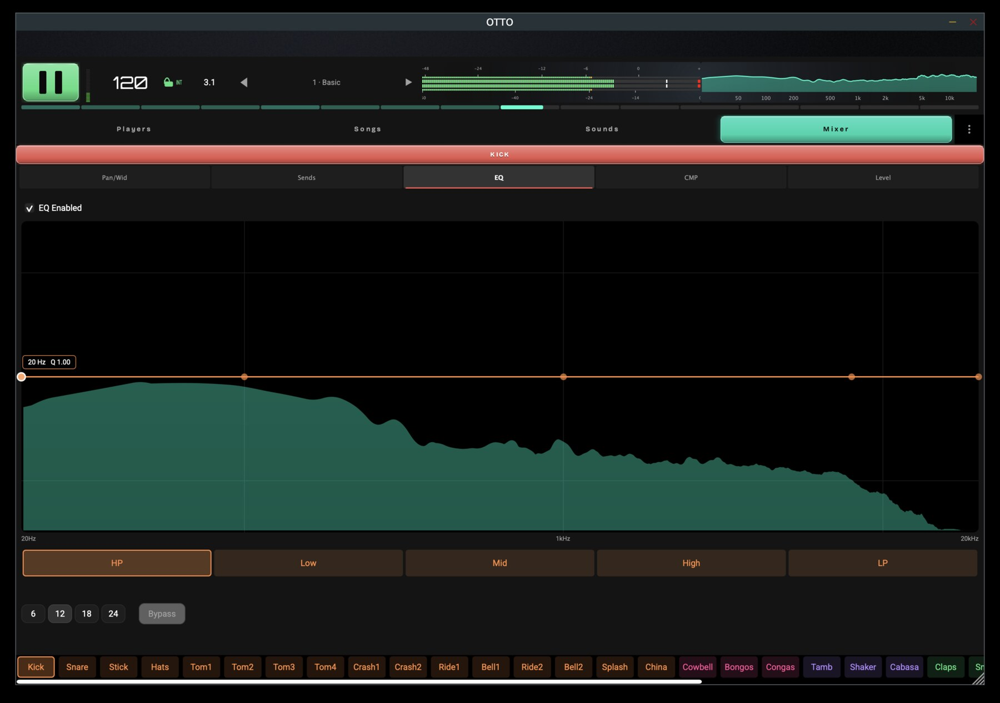
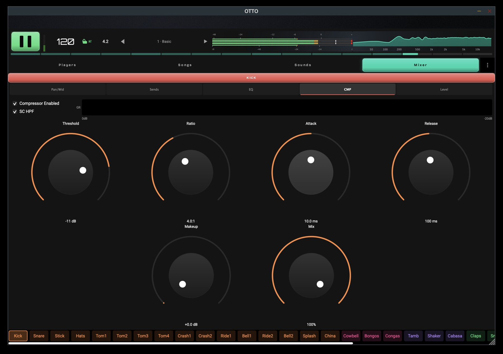
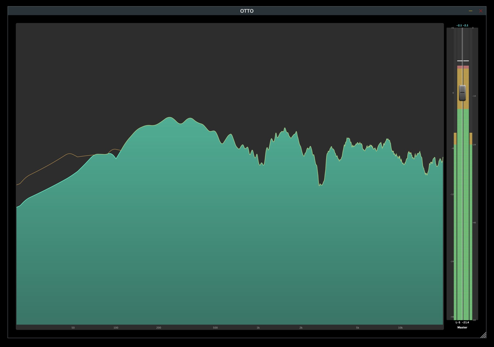

OTTO
Organic Tempo and Time Orchestrator. A four-player drum-arrangement instrument that breathes like a real drummer — played, not programmed.
OTTO is free. Launching December 2026. The app and 100 kit-and-pattern combinations cost nothing, and the engine underneath them is the whole engine.
Mac · Windows · Linux · iOS | Standalone, VST3, CLAP & AUv3
Free at launch, December 2026. One email when it’s ready — no spam, no list-selling.
Hear It
Screenshots cannot show you the part that actually matters, which is how it feels to play. This walkthrough is the sound and the playing.
An early build — the sound and workflow are here; the interface keeps evolving toward launch.
The Problem
Drum machines sound robotic because every hit lands on a perfect grid at one fixed intensity. Real rhythm sections breathe — they shift energy, push and pull feel, and arrange parts that answer one another. OTTO brings that to electronic drums: four independent players, each with its own kit and part, performed through an energy system that changes how a pattern feels without changing the notes.
Key Features
- Four independent playersEach with its own role (Drums, Percs, Shakers, Hands), kit, part, and mixer channel, sharing a single transport
- Energy-driven feelSeven energy levels, from Asleep to Energetic, reshape velocity, timing, and articulation in real time without altering the underlying pattern
- Role-based arrangementPatterns carry a section role and energy and are placed on each player's lane to build a living performance
- Hybrid sound generationEvery kit blends sampled and procedurally-synthesized voices, decided per articulation
- Built for the stageStrict discipline on the audio thread — no allocation, no locks, no file access while sound is playing — because OTTO is played live, not programmed
- One engine, two livesThe same code runs as a standalone instrument or an embeddable engine
- Flexible output routingA stereo sum, a per-player split, or a per-element split, all from one shared mixer
Platforms & Formats
One instrument, everywhere you work — on the desktop, on stage, and inside your DAW.
- Operating systemsmacOS, Windows, Linux, and iOS — the same OTTO on every device
- StandaloneRun OTTO on its own, no host required — built for the stage
- Plugin formatsLoad it in your DAW as VST3, CLAP, or AUv3
Screenshots
Captured from a running build with a demo song playing.








White Paper
OTTO is documented in depth — its first principles, the four independent players, role-bearing pattern playback, energy-driven feel, and the real-time discipline that holds the timing together on stage.
Read the OTTO White PaperFX Modules
OTTO's signal path is shaped by a family of in-house effects modules, shared with IDA. The compressor and the reverb among them work differently from the usual approach:
Pricing
The free version is the whole instrument, not a demo of it. What the paid tiers add is library — more kits, more patterns — not features held back from the engine.
Free
$0 forever
- The OTTO app on Mac, Windows, Linux, and iOS
- 10 acoustic drum kits and 10 drum patterns
- Any pattern plays any kit — 100 combinations
- The complete engine: four players, energy feel, arrangement, mixer, and FX. Nothing is reserved for the paid tiers
Full Unlock
$129
- All 113 kits in the Larry Seyer Acoustic Drum Library — the library I have been recording and programming since the Gigasampler days
- The full synth drum system
- Every drum pattern
- All Vector FX modules
One payment for everything in OTTO today. As the library grows, new kit packs are available any time.
Kit Packs
$14.95 / 10 kits
- Grow your library a pack at a time
- Every kit plays with every pattern
- For when the full unlock is more library than you need
Pricing goes live when OTTO launches in December 2026 — get notified at the top of the page.
Licensing
OTTO is free to download and play. The app itself is commercial, proprietary software — licensed, not sold. Music you make with OTTO is yours, and no royalty is owed on it.
The Larry Seyer Acoustic Drum Library is proprietary content. You may use it freely in your music productions, including commercial releases, but the sample files themselves may not be extracted or redistributed.